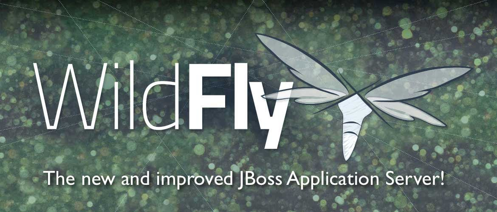

Let’s WildFly with jBPM6
Let’s go into the Wild….
It’s been a while since JBoss AS7 as community was released and that’s the default server used by jBPM in community distribution – when using jbpm installer but not only limited to that as it’s frequently first choice to give it a try with jBPM 6.
No wonder as it’s state of the art application server leading in the industry and very developer friendly. Some time ago JBoss AS has moved to its next version called WildFly and now is available as final release – there’s even already second version released – 8.1.0.Final. You can download it from here.
 |
| Source – wildfly.org |
All details about WildFly can be found at its web site but just to highlight the most important:
- Java EE 7
- extremely lightweight
- low memory footprint
- comes with latest version of best open source projects
- hibenrate
- infinispan
- resteasy
- weld
- IronJacamar
- HornetQ
- and more…
With that short introduction, it’s high time to give jBPM 6 a WildFly as well. By that I mean have kie workbench (aka jbpm console) running on full speed on WildFly application server. The version chosen is the latest one – 8.1.0.Final due to some issues found in 8.0.0.Final that limited remote capabilities – REST interface did not work properly – though this is not an issue with 8.1.0.Final.
So jBPM comes with additional distribution of:
- kie-wb – fully featured workbench that includes both jbpm (process) and drools (rules) authoring and runtime capabilities
- kie-drools-wb – similar to what kie-wb is but it’s stripped out from jbpm (process) capabilities and focusing mainly on rules authoring (including projects and repositories)
there are two dedicated web application archives tailored for WildFly application server that are named as follows:
- kie-wb-${version}-wildfly.war
- kie-drools-wb-${version}-wildfly.war
the assemblies are being built while this article is written so be bit patient and let jenkins build properly the artifacts so you’ll be able to download it from JBoss Nexus repository. Keep in mind that these are still snapshots and might have some issues so for those that are willing to wait a bit in like a week from now 6.1.0.CR1 should be out in the wild as well.
Installation
Just download WildFly 8.1.0.Final (useful getting started guide), extract it and drop the dedicated wildfly distribution war file into standalone/deployments directory (you can also rename the war file to kie-wb.war to make it bound to kie-wb context path). Next same as for JBoss AS7 add users to the security domain so you can logon to the system once it’s up and running:
- use add-user.sh/add-user.bat script in JBOSS_HOME/bin
- follow the wizard where important are the following
- Application Realm
- Roles: admin to have access to all capabilities of the system
Next is to ensure that server is started with standalone-full profile:
./standalone.sh –server-config=standalone-full.xml
then wait for application server to complete startup and visit http://localhost:8080/kie-wb
And that’s it – jBPM 6 is running on latest JBoss application server – WildFly 8.1.0.Final.
Currently known issues
As usual with first major releases of core components there are some issues, fortunately not blockers. Obviously there might be still some other so feel free to report anything that you find not working on WildFly with jBPM6 either on user forum or as jira issues.
- class cast exceptions thrown by Errai only clean of CDI caches – see ERRAI-750 issue for details and to keep an eye on it
- on logout there are errors written to server log about broken pipe or closed stream caused by some Errai interaction – see ERRAI-754 issue for details and to keep track of the progress
While this issues might be bit annoying they do not cause any overall issues for the application (at least none were identified so far). The first one can he mitigated by hiding these warning via logging configuration. Add following to standalone-full.xml to hide these warnings:
<logger category=”EventDispatcher”>
<level name=”ERROR”/>
</logger>
As always, all comments and issues are more than welcome.

{kind=link}